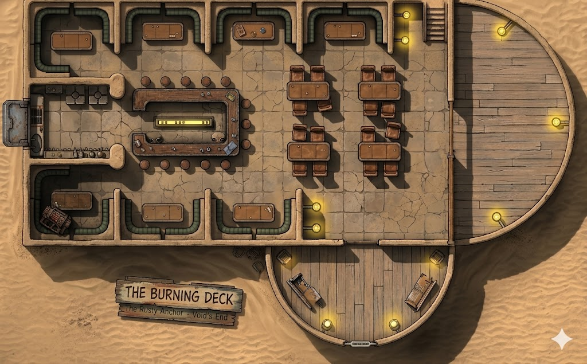

Reestkii, Jakku. A settlement the galaxy forgot — if it ever noticed. Drifters, smugglers, moisture farmers with nothing left to farm. The Burning Deck is what passes for a cantina at the edge of civilization. The name's painted over whatever it was called before (The Rusty Anchor), which was painted over the name before that (Void's End). Three names, same cantina, same sand in your drink.
Sandstone and scavenged durasteel, built into the hull of something that crashed here long enough ago that nobody remembers what it was. The curved front wall — the "prow" — is original hull plating, sand-pitted but still holding. The rest is local stone, heat-sealed mud brick, and whatever metal sheeting the builders could bolt on. The roof is flat, patched with tarp in two places.
Single story with a partial mezzanine. Roughly 25m long and 15m wide at the prow. Seats maybe thirty — four private booths along the back wall, four dining tables on the main floor, six stools at the bar. The kitchen takes up the entire rear-left. The building curves to a point at the front, following the shape of whatever ship hull it was built around.
Salvaged from a decommissioned Star Destroyer's officers' mess — Imperial serial numbers still stamped into the underside of the durasteel counter. Six mismatched stools bolted to the floor. Behind it: bottles in every color, a carbonite-chilled tap system for local ale, and a nervous Bith bartender who sees everything and says nothing. The bar top is scarred with blaster burns, knife marks, and the rings of a thousand glasses.
Four private alcoves along the back wall, separated by thick stone partitions. High-backed bench seats with cracked synth-leather. Curtain rods above each — most curtains stolen or used as rags. Low light, hard to see from the main floor, easy to watch the door. The kind of seats where deals happen and alibis are born.
Nervous, attentive, silent. Wipes the same glass on repeat. His oversized eyes track every movement. He knows who owes what to whom, who's armed, and who's about to start trouble — but he won't volunteer information unless he trusts you. Keeps a holdout blaster and a datapad full of names in the utility closet.
Sits alone in the west alcove. Turning a credit chip across his knuckles. Watching everything. Playing nothing. He's not waiting for a game — he's waiting to see how the evening plays out. Professional observer. Might be a scout for one of Varga's competitors. Might be nobody.
Two of them, arguing over a rusted motivator in the center-east booth. Their guttural voices carry across the whole cantina. The argument is real — the motivator is stolen, and they can't agree on a price. They'll fight each other before they fight anyone else, but they're big enough to be a problem if provoked.
Ex-military. Scarred montrals. Nursing a drink at the bar. Hasn't looked up once, but her hand never strays far from her hip. She's not waiting for anyone — she's deciding whether to leave Jakku tonight. She knows things about the Western Reaches that most spacers don't, if anyone bothers to ask. Name's Nela Bren.
Engine coolant. Cheap Corellian whiskey. Frying nerf sausage from the kitchen. Desert dust that gets into everything. Under it all, the faint ozone tang of a power cell running hot — the cooling system is overworked.
The rattle of blast shutters when the wind picks up. Low conversation punctuated by the Abyssin argument. The clink of glasses. The wheeze of the entrance doors. A music unit in the corner plays the same six jizz tracks on loop — the volume knob broke months ago and nobody's fixed it.
Hot. Jakku hot. The stone walls hold the day's heat and release it slowly through the night. The kitchen makes it worse. A single ceiling fan turns with agonizing slowness, moving air that doesn't want to be moved. The bar area is marginally cooler — the carbonite tap system radiates cold.
Failing glow-rods on the walls — warm amber, inconsistent. The booth above the center-west alcove flickers on a three-second cycle. The prow viewports let in Jakku's harsh white sunlight during the day, cut to blue-white starlight at night. The kitchen has its own industrial light that leaks through the serving hatch. Corners stay dark.